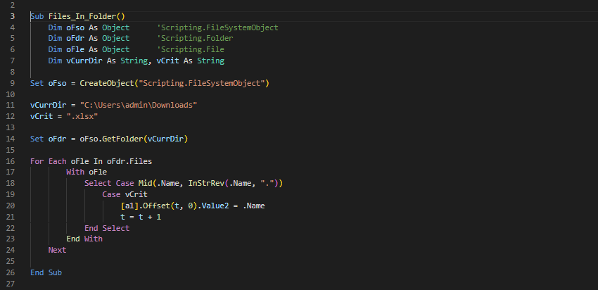
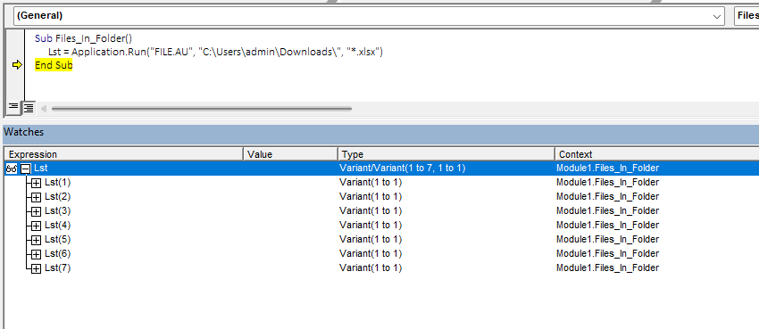
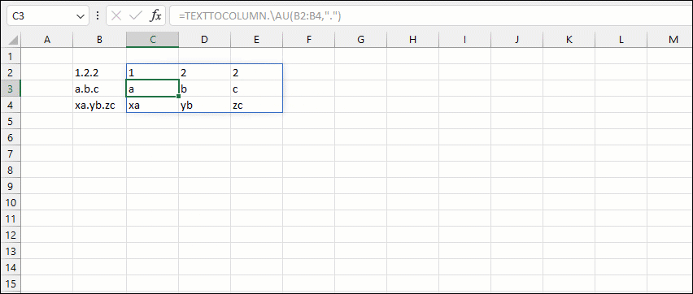
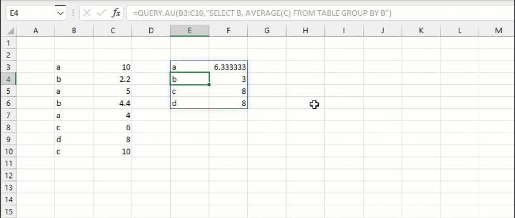
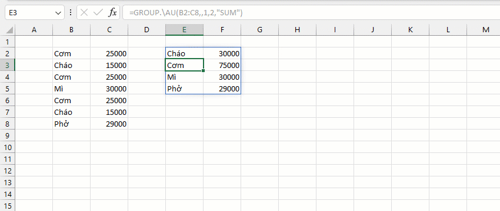
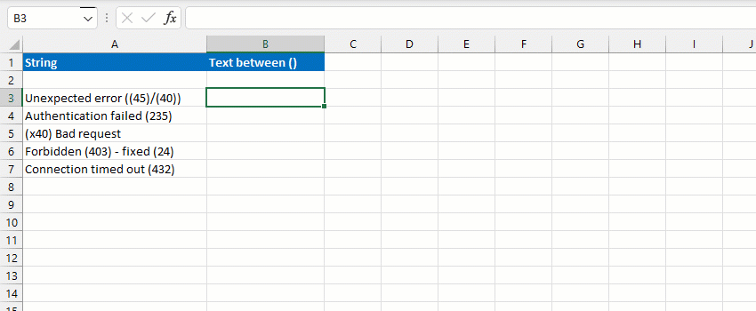
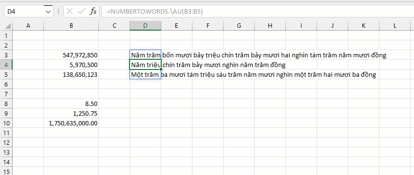
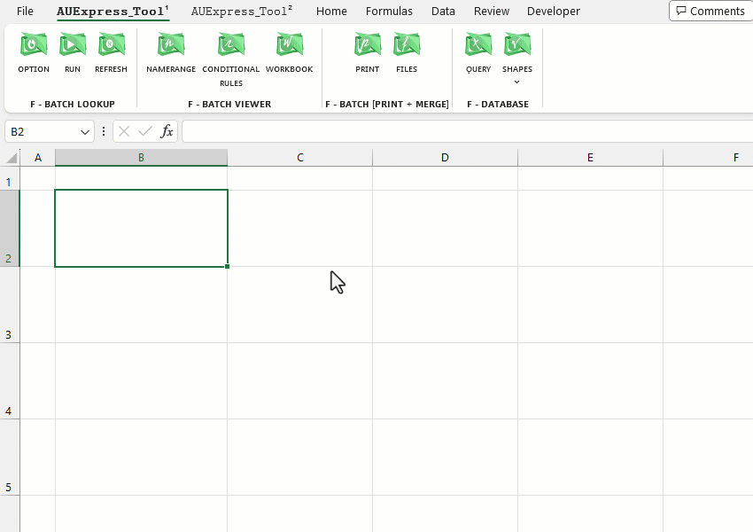
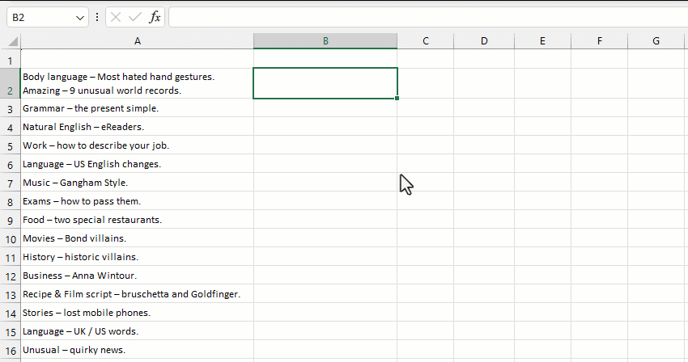

ＡＵＥＸＰＲＥＳＳ - １０.２.２.８５
Buy Now!
Office Add-ins Documentation
Sơ lược về AUExpress Tools:
● Là bộ thư viện các tính năng mở rộng, bộ Add-in cao cấp, xuất sắc cho Excel.
● Phù hợp với mọi đối tượng, mọi chuyên ngành từ học sinh, sinh viên, kỹ sư, kế toán, kiểm toán, lập trình
viên!
● Phù hợp với mọi ngành nghề, mọi lớp trình độ-kỹ năng Excel từ cơ bản, trung cấp, cho đến Chuyên gia!
Dễ dàng cài đặt vào Excel:
● Phổ biến với Windows 8.1, Windows 10, Windows 11.
● Hoạt động trên các phiên bản Excel-64bit (từ Excel-2010 đến phiên bản mới nhất Excel-365).
● Để trải nghiệm tốt nhất tính năng của Add-ins, bạn nên cài đặt Excel2021 hoặc Excel365.
● Để kiểm tra phiên bản Excel-64bit, click vào
Post .
Tích hợp vào Excel:
● Để cài đặt [AUExpress_Tools] Addins, click vào button Download
(trên góc) hoặc
Download
rồi làm theo hướng dẫn.
● Để chúng tôi có thể duy trì và phát triển ứng dụng này, bạn sẽ cần phải trả phí theo năm hoặc vĩnh viễn tùy theo nhu cầu.
● Một Account chỉ cần đăng nhập và xác nhận một lần duy nhất.
Điểm khác biệt:
● Mở rộng đáng kể tính năng có sẵn trên Excel & VBA bao gồm thư viện Hàm (>470 functions),
phím tắt (~50 new ShortcutKeys), ~200 tổ hợp chức năng từ Ribbon.
● Tăng khả năng tự động hóa các tác vụ trên Excel - VBA, tăng khả năng tương tác giữa Excel với Web,
Desktop.
● Giúp khả năng phân tích, thao tác dữ liệu trở nên vượt trội so với thuần chủng Excel - VBA -
GoogleSheets.
● Dễ dàng kết nối và truy vấn tới tất cả các TOP Database từ Excel: MySQL, PostgreSQL, Oracle, SQLite, SQL Server,..
● Sử dụng hàng trăm tính năng được cung cấp bạn có thể sáng tạo ra hàng ngàn tính năng khác nhau phù
hợp với nhu cầu công việc.
● Biến Excel thành công cụ editor phân tích, trao đổi giữa nhiều nguồn dữ liệu, hỗ trợ tuyệt vời ngay
cả khi bạn đang học hoặc lập trình phần mềm.
Tại sao nên sử dụng?
1. Tiết kiệm thời gian cho quá trình học tập và làm việc trên Excel.
Ví dụ: Để lấy danh sách tất cả các Files từ thư mục Download, với VBA - đoạn mã thường sử dụng là:

- Tuy nhiên nếu sử dụng Tools, mã của bạn:
- Kết quả thu được tương tự nhau nhưng bạn đã tiết kiệm được vô số thời gian viết mã:

2. Tài liệu hướng dẫn người dùng được trình bày trực quan, chi tiết và dễ thực hành.
3. Đáp ứng độ tin cậy của công việc (giúp tránh các sai sót khi làm thủ công, thời gian thực thi, kết quả
dự kiến có thể lường trước).
4. Đáp ứng các yêu cầu tính toán cơ bản đến nâng cao ! Chúng tôi có thể mở rộng tính năng của bộ công
cụ hỗ trợ cho công việc cho các thành viên.
● Dù có thành thạo Excel đến đâu. Nếu muốn tự động hóa bạn cần sử dụng Tools.
● Sử dụng các Tools, Add-in là con đường ngắn nhất, nhanh nhất và thậm chí tốt nhất để
tăng ưu
năng suất và hiệu quả công việc trong thời đại này.
Hỗ trợ:
● Để thành thạo, bạn sẽ cần ít nhất 2 tuần đến 1 tháng để làm quen với các tính năng cơ bản trước khi
sử dụng công cụ nâng cao để giải các vấn đề phức tạp hơn.
● Học cách sử dụng AUExpress_Tools là dễ dàng hơn nhiều so với học Excel-VBA chuyên sâu, Query, BI hay
Python,
Javascript và các công cụ lập trình khác.
● Phản hồi với chúng tôi theo địa chỉ Email hoặc inbox Fanpage khi bất kỳ thành phần nào gặp sự cố
hoặc hành
vi ngoài mong đợi.
● AUExpress_Tools được cập nhật mỗi ngày, hãy lưu lại đường link và luôn sẵn sàng tải xuống và trải
nghiệm
phiên bản mới nhất.
● Các đề xuất tính năng mới, cải thiện giao diện cũng như cách hoạt động sẽ được xem xét ưu tiên triển
khai để nâng cao trải nghiệm người dùng.
Demo tính năng:
● Demo 1: Phân tách dữ liệu cột bằng hàm TEXTTOCOLUMN.

● Demo 2: Truy vấn dữ liệu bằng hàm QUERY, dễ dàng học cú pháp và thực hành câu lệnh SQL
ngay trên Excel.

● Demo 3: Phân nhóm, thống kê thức ăn đồ uống cũng như doanh số chỉ với một hàm
GROUP.

● Demo 4: Tách số bằng hàm REGEXEXTRACT, giải pháp mở rộng so với
GOOGLE-SHEETS.

● Demo 5: Tìm kiếm và tra cứu bằng hàm VLOOKUP, giải pháp ngắn gọn so với FILTER.
● Demo 6: Đọc số thành chữ bằng hàm NUMBERTOWORDS. (bao gồm số nguyên, số âm hoặc số thập
phân).

● Demo 7: Chèn ảnh hàng loạt từ thư mục cho trước.

● Demo 8: Dịch văn bản bằng hàm GOOGLETRANSLATE (mở rộng so với GOOGLE-SHEETS).

Cách sử dụng:
● Các hàm cơ bản thường không có hướng dẫn, vui lòng tự
thực hành để hiểu cách sử dụng.
● Các hàm nâng cao sẽ được minh họa bằng gif, nếu cần
bổ sung thêm ví dụ gửi hãy yêu cầu cập nhật tới Fanpage.